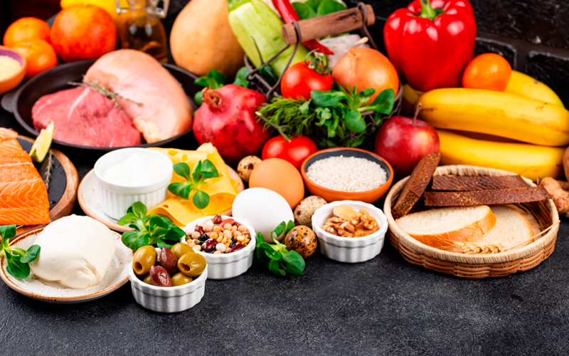

Omelette Recipe
Classic Omelettle
Prep
5 mins
Cook
5 mins
Total
10 mins
Ingredients
4 large eggs
room temperatureroom temperature
1/4 cup whole milk
1/4 teaspoon kosher salt
2 tablespoons unsalted butter

Instructions
Beat the egss and milk until ligth frothy
Heat nonstick skillet over medium heat. Add the butter
Pour in the eggs. Let them set for a few seconds
Usea a spatula to push the cooked eggs from the edge of the skillet toward
When the eggs are mostly set but still soft, fold in half.
Slide the Omelettle onto a plate
Nutrition facts
Calories: 292kcal
Carbohydrates: 1g
Fat:26g